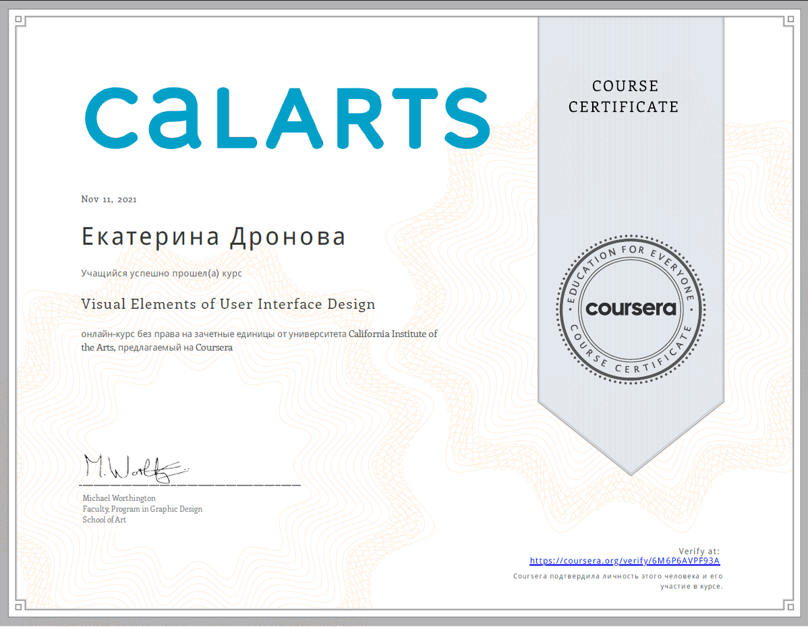

Contacts
- LinkedIn: ekaterina-dronova
- GitHub: KateDronova
- E-mail: katedronova96@gmail.com
- Telegram: Feierin
About me
My goal and strong wish is to become a highly-qualified specialist and work in a reliable company.
All this year I have already devoted to studying, and now, finally, it's time to act!
Skills and Proficiency
- Programming tools:
- HTML & CSS;
- JavaScript;
- Git & GitHub;
- VS Code;
- Markdown.
- Design tools:
- 2D: Adobe Photoshop, Illustrator, Coral Draw;
- 3D: ArchiCAD, Sketch Up, КОМПАС-3D, Lumion.
- Mapping tools:
- MapInfo.
Education & experience
- Ulyanovsk State Technical University (bachelor designer - architect);
- Coursera: UX/UI online course;
 - HTML-academy: HTML, CSS & JavaScript online theory and practice (6 months);
- Codecademy: free online lessons on JS;
- eLearn UpskillMe program: in progress.
My latest code examples are JS tasks from HTML-academy such as:
/* Техническое задание Напиши программу, которая проверяет, является ли число палиндромом. Число записано в переменную poly. Переменная, куда нужно записать "перевёрнутую" версию числа, называется ylop. Выясни, является ли число из переменной poly палиндромом. Если да, значение флага isPalindrome должно быть true, если число не палиндром, то false.*/
let poly = 1221;
let ylop = 0;
let isPalindrome = false;
let divider = 10;
let multiplier = 1;
for (i = 0; multiplier <= poly / 10; i++) {
multiplier *= 10;
}
for (i = 1; divider <= poly * 10; i++) {
ylop += (poly % divider - poly % (divider / 10)) * multiplier;
console.log(ylop);
divider *= 10;
multiplier /= 100;
}
if (poly === ylop) {
isPalindrome = true;
} else {
isPalindrome = false;
}
Languages
- English - B1 (B2);
- Russian - native;
- French - basics;
- Spanish - basics;
- Turkish - basics.